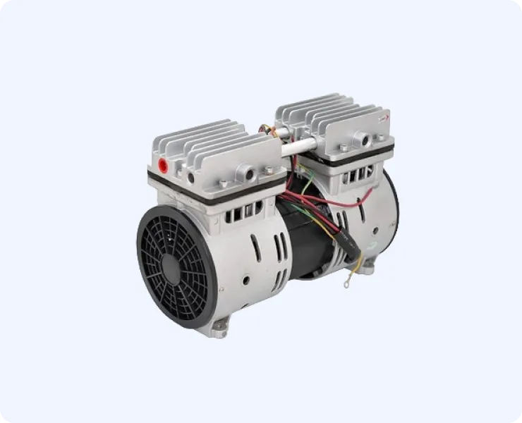

Аэраторы для пруда
Компрессор поршневой CRP-550AF, от 35 до 135 л/мин, 560 Вт, 8Бар
Цена и наличие
- 1 шт.2 014,65 BYN / шт.В наличии
Данные на 23.11.2026.
Характеристики
- Бренд
- Sunsun
- Тип аэратора
- поршневой
- Мощность
- 560 Вт
- Производительность
- 135 л/мин
- Давление
- 8 Бар
- Расход воздуха
- 135 л/мин
- Напряжение, В
- 220
- Производительность, л/мин
- 135
- Страна производитель
- Китай
- Уровень шума
- Средний, 58 дБ
Описание
Аэратор обогащает воду кислородом, создает движение воды в пруду, в результате чего обеспечивается оптимальное развитие бактерий и восстанавливается биологическое равновесие, и предотвращается мор рыбы.
АЭРАТОР ДЛЯ ПРУДА CRP-550AF, 135 Л/МИН, 8 БАР, 560 ВТ Безмасляный поршневой компрессор CRP-550AF обладает производительностью от 35 л/мин до 135 л/мин Безмасляные поршневые компрессоры CRP-550AF и OLF 750 представляют собой удачную конструкцию отвечающую всем требования к данному типу компрессорного оборудования. Надежность — Поскольку компрессор оснащен двумя поршневыми механизмами компрессор обладает высоким запасом прочности. Малошумность — Работу компрессора отличает низкий уровень шума, отсутствие масла, очень малая вибрация. В комплекте с компрессором поставляется резиновые опоры и конденсатор пуска. Очень часто данную модель используют в медицине, как стоматологический компрессор.